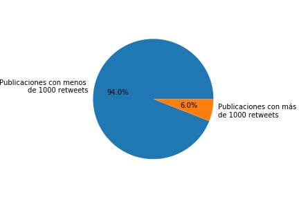

En el siguiente artículo se analizarán datos estadísticos tomados de la red social Twitter, referentes a la cadena de comida rápida McDonalds. Los datos analizados son Tweets de diferentes personas en el lenguaje español donde se menciona la palabra McDonalds. Para el análisis se decidió tomar una muestra de 100 Tweets.
Se inició el análisis de toda la muestra, obteniendo lo siguiente:
Se puede evidenciar que los datos se encuentran muy dispersos con respecto a la media. Además la moda por lo general es cero o un número muy grande, lo que evidencia que la mayoría de los datos poseen muy pocos retweets o tienen demasiados. Por ello se analizará el rango para comprobar que gran parte del valor de la media proviene de un grupo de la muestra con una gran cantidad de retweets.
Al comprobarse el gran rango existente, se decide dividir la muestra en dos grupos: El primero contiene las publicaciones con menos de 1000 retweets, mientras que el segundo contiene las publicaciones con 1000 o más retweets.
En el siguiente gráfico se muestra el porcentaje de la muestra que pertenece a cada grupo que se creará
Al analizar la muestra del grupo de datos con muchos retweets se obtuvo lo siguiente:
Con base en esta información se puede deducir que la gran mayoría de éste tipo de Tweets provienen de una o pocas publicaciones que han sido muy retwitteadas.
Cuando se analiza el contenido de los tweets se descubre que los tweets muy retwitteados se puede evidenciar que éstos son mayormente de carácter político o referentes a un suceso particular ocurrido en McDonalds.
Al analizar la muestra del grupo de datos con pocos retweets se obtuvo lo siguiente:
Con base en esta información se puede deducir que la gran mayoría de los Tweets en ésta muestra no son retwitteados, o son retwitteados poco.
Sin embargo, al leer los comentarios de los tweets con pocos retweets, se descubre que éstos poseen una mayor diversidad referente a la temática que tratan.
La propuesta de solución consiste en hacer mayor énfasis sobre los Tweets que reciben pocos retwetts, debido a que éstos muestran de mejor manera intereses de las personas hacia McDonalds.